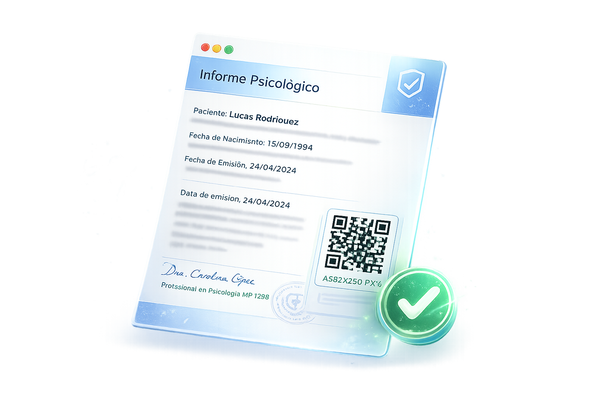

Validación electrónica de documentos profesionales.
Verifique la autenticidad de informes psicológicos, certificados psicológicos, certificados psiquiátricos y demás documentación profesional mediante un código QR o un identificador único.

Verifique cualquier documento en tres simples pasos.
El sistema permite confirmar la autenticidad de un documento profesional emitido electrónicamente mediante un código QR o un identificador único.
Escanee el código QR
Utilice la cámara de su teléfono o ingrese directamente al sistema de validación.
Verifique el documento
El sistema consulta el registro electrónico y valida la autenticidad del documento.
Obtenga el resultado
Visualice inmediatamente el estado del documento y sus datos de emisión.
Valide diferentes tipos de documentación profesional.
La plataforma permite verificar la autenticidad de distintos documentos emitidos electrónicamente por profesionales.
Informe Psicológico
Evaluaciones e informes profesionales.
Certificado Psicológico
Constancias e informes de aptitud.
Certificado Psiquiátrico
Certificados médicos y laborales.
Constancias
Asistencia, tratamiento y seguimiento.
Código QR
Cada documento posee un identificador único.
Validación inmediata
Resultado disponible las 24 horas.